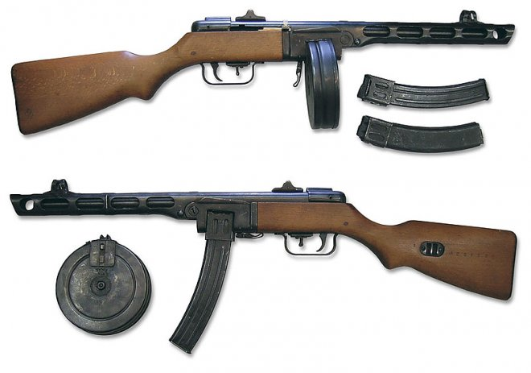

За четыре года, прошедших между необъявленным началом войны и подписанием германской капитуляции, стороны провели бесчисленное количество сражений. Некоторые из них навечно вошли в военную историю как битвы, определившие исход самой страшной войны в истории человечества.x
События
............Название............
............Год начала............
............Год конца............
.........Московская битва.........
1941 год
1942 год
.........Сталинградская битва.........
1942 год
1943 год
.........Курская битва.........
1943 год
1943 год
.........Белорусская операция.........
1944 год
1944 год
.........Берлинская операция.........
1945 год
1945 год
Стрелковое оружие
К концу 30-х годов практически у всех участников грядущей мировой войны сформировались общие направления в развитии стрелкового вооружения. Сокращалась дальность и точность поражения, что компенсировалось большей плотностью огня. Как следствие этого – начало массового перевооружения частей автоматическим стрелковым оружием – пистолет-пулеметами, автоматами, штурмовыми винтовками.
Кучность стрельбы стала отходить на второй план, при этом солдат, наступавших цепью, стали обучать стрельбе с хода. С появлением воздушно-десантных войск возникла необходимость создания специального облегченного вооружения.
Маневренная война сказалась и на пулеметах: они стали гораздо легче и мобильней. Появились новые разновидности стрелкового оружия (что продиктовано было, прежде всего, необходимостью борьбы с танками) – ружейные гранаты, противотанковые ружья и РПГ с кумулятивными гранатами.
Винтовка Мосина
Свое боевое крещение винтовка прошла в 1900 году, когда участвовала в подавлении «боксерского» восстания в Китае. Уже довольно широко она применялась в русско-японской войне, позже на фронтах Первой Мировой войны.
Конструкция и быстро развернутое производство позволили создать много образцов оружия. Со временем, применялись необходимые усовершенствования.
Так, «трехлинейка» дошла до полей сражений советско-финского конфликта, а затем и тяжелейших, кровопролитных боев страшной Второй Мировой войны. Но история создания столь удачного оружия не была простой.
В конце 19 века Российская Империя начала проводить испытания собственных образцов стрелковых ружей. На тот момент был открыт бездымный порох, который позволил изменить конструкцию патрона, сделав его более компактным и надежным.
МP-40
Один из первых пистолетов пулеметов современного типа, стереотипное оружие вермахта, превосходный немецкий автомат Шмайсер МП40 был грозой тогдашних Cоюзников и сеял смерть среди врагов Рейха. Продвинутая технологическая база, высокая точность и эргономичность оружия сделала МП40 наиболее важным переходным звеном в развитии пистолетов пулеметов вообще.
ППШ

Пистолет-пулемет ППШ-41 разработан Георгием Семеновичем Шпагиным в 1940 году с целью замены не технологичного и дорого в производстве пистолета-пулемета Дегтярева ППД-40. 21 декабря 1940 года пистолет-пулемет Шпагина был принят на вооружение РККА. Пистолет-пулемет ППШ-41 (Пистолет-Пулемет конструкции Шпагина) является надежным в работе, простым в эксплуатации и уходе, технологичным и дешевым в производстве оружием. ППШ-41 стал одним из самых массовых образцов стрелкового оружия Второй Мировой войны, а всего с 1941 по 1945 гг. было изготовлено порядка 6 миллионов экземпляров. В военные годы ППШ-41 поставлялся советским партизанам и поступал на вооружение иностранных воинских формирований на территории СССР. Трофейные ППШ-41 под наименованием Maschinenpistole 717(r) состояли на вооружении вермахта, СС и других военизированных формирований Третьего Рейха и стран нацистского блока «оси».
Немного истории
СССР
В первые дни Великой Отечественной войны фашистские войска громили Красную Армию по всем фронтам. Причиной этому являлся человеческий фактор – уверенность Сталина и высшего командования в том, что Гитлер не нарушит договор.
После начала Второй Мировой Войны, СССР ускорил реорганизацию и увеличение состава вооружённых сил. К началу ВОВ в Красной Армии насчитывалось 5,3 млн. человек. В вопросе вооружения советские приграничные округа отличались внушительными оборонительными возможностями, но они не были вовремя приведены в полную боевую готовность.
Главная тактическая ошибка наших войск состояла в неслаженном взаимодействии разных родов войск: пехоты, танков, авиации и артиллерии. Пехота не следовала по огневому направлению артиллерии, отрывалась от танков. Эти промахи стали основной причиной огромных потерь в начальный период войны.
В первые часы войны немецкая авиация уничтожила большую часть советских танков и самолётов, оставив за собой господство в воздухе и на земле. Основная часть работы по защите Родины легла на плечи обычных пехотинцев.
Вооружение СССР перед началом Великой Отечественной войны соответствовало запросам того времени. Магазинная винтовка Мосина обр. 1891г калибра 7.62 мм была единственным экземпляром неавтоматического оружия. Эта винтовка прекрасно зарекомендовала себя в ВОВ и находилась на вооружении СА до начала 60-х годов.
Параллельно с винтовкой Мосина советская пехота оснащалась самозарядными винтовками Токарева: СВТ-38 и у усовершенствованной в 1940 году СВТ-40. Также в войсках присутствовали автоматические винтовки Симонова (АВС-36) – в начале войны их количество насчитывалось почти 1,5 млн. единиц.
Присутствие такого огромного числа автоматических и самозарядных винтовок перекрывал недостаток пистолетов-пулемётов (только в начале 1941 г. началось производство ПП Шпагина, ППШ-41, который надолго стал эталоном надёжности и простоты).
Лучшим образцом пистолетов-пулемётов в годы ВОВ был признан ППС-43 (пистолет-пулемёт Судаева).
Одной из главных особенностей вооружения пехоты Советской армии в начале ВОВ являлось полное отсутствие противотанковых ружей. И это отразилось уже в первые дни боевых действий. В июле 1941 г. Симонов и Дегтярев по приказу высшего командования сконструировали пятизарядное ружьё ПТРС (Симонов) и однозарядное ПТРД (Дегтярев).
За всё время Великой Отечественной войны военной промышленностью СССР было выпущено 12139.3 тысяч карабинов и винтовок, 1515.9 тысяч всех видов пулемётов, 6173.9 тысяч пистолетов-пулемётов. С 1942 года каждый год производилось почти 450 тысяч станковых и ручных пулемётов, 2 млн. пистолетов-пулемётов и более 3 млн. самозарядных и магазинных винтовок.
Начало Великой Отечественной войны подтвердило важность хорошего снабжения пехоты новейшими образцами стрелкового оружия. Входе войны было разработано и поставлено в армию немало различных оразцов автоматического вооружения, что в конечном итоге сыграло решающую роль в победе СССР над фашистскими захватчиками.
Германия
Приготовление фашистской Германии к началу Второй Мировой Войны стало аспектом серьезных разработок в сфере военных технологий. Вооружение фашистских войск на то время по последнему слову техники, несомненно, стало существенным преимуществом в боях, что позволило третьему рейху привести многие страны к капитуляции.
Военную мощь нацистов особо испытал на себе СССР во времена Великой Отечественной Войны. Перед нападением на Советский Союз силы фашистской Германии насчитывали около 8,5 млн. человек, в том числе в сухопутных войсках насчитывалось приблизительно 5,2 млн. человек.
Техническая оснащенность обуславливала многие пути ведения боевых действий, маневренные и ударные возможности армии. После компании в Западной Европе германский вермахт оставил лучшие образцы вооружения, показавшие наибольшую эффективность в боевых действиях. Перед нападением на СССР данные прототипы подверглись интенсивной модернизации, их параметры были доведены до максимальных показателей.
На вооружении фашистских пехотных дивизий, как основных тактических войск, стояли магазинные винтовки со штыками 98 и 98k «Маузер». Хотя и Версальский договор для Германии предусматривал запрет на производство пистолетов-пулеметов, немецкие оружейники все же продолжали выпускать данный тип оружия. Незадолго после начала формирования вермахта в своем облике проявился пистолет-пулемет МР.38, который, благодаря тому, что отличался небольшими размерами, открытым стволом без цевья и складывающимся прикладом, быстро себя запатентовал и был принят на вооружение еще в 1938-ом.
Накопленный в боевых действиях опыт потребовал последующей модернизации МР.38. Так появился пистолет пулемет МР.40 , который отличался более упрощенной и удешевленной конструкцией (параллельно некоторые изменения вносились в МР.38, которые после получили обозначение МР.38/40). Компактность, надежность, практически оптимальный темп стрельбы были оправданными достоинствами данного оружия. Немецкие солдаты называли его “пулевым насосом”.
Бои на Восточном фронте показали, что пистолет-пулемет все еще нуждался в повышении меткости. Этой проблемой занялся уже Х. Шмайссер, который оборудовал конструкцию МР.40 деревянным прикладом и устройством переключения на одиночный огонь. Правда, выпуск таких МР.41 был незначителен.
Германия вступила в войну всего с одним пулеметом MG.34, который применялся, как и ручной, так и танковый, станковый и зенитный. Опыт его применения доказал, что концепция единого пулемета вполне правильна. Тем не менее, в 1942-ом детищем модернизации стал MG.42, прозванный ”пилой Гитлера”, который считается лучшим пулеметом Второй Мировой Войны.
Фашистские силы принесли Миру немало бед, однако стоит признать, что в военной технике они действительно разбирались.